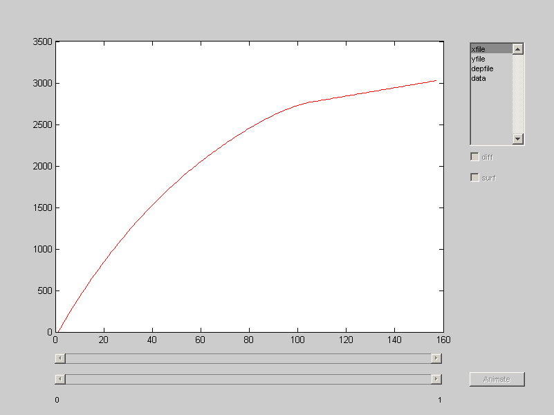
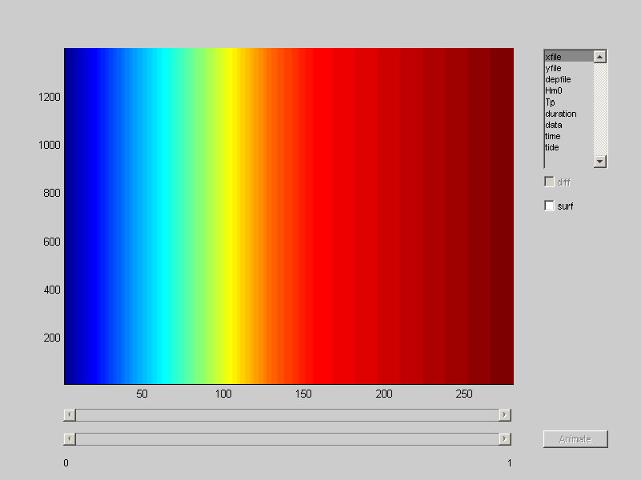

Visualise model input
Once your model setup is finished, or at least you think so, you can visualise your bathymetry and other data using the xb_plot function. This function basically plots any vector or matrix data from an XBeach structure. It provides a simple interface to select the data to be plotted (can be multiple) and the way it should be plotted.
% generate dummy model xbm = xb_generate_model; % plot model setup xb_plot(xbm);
Depending on the amount of vector and matrix data, the plotting options will be extended
% obtain bathymetry data url = 'http://opendap.deltares.nl/thredds/dodsC/opendap/rijkswaterstaat/vaklodingen/vaklodingenKB121_2524.nc'; [x y z] = deal(nc_varget(url, 'x'), nc_varget(url, 'y'), nc_varget(url, 'z')); z = squeeze(z(end,:,:)); % generate storm surge [h Hs Tp] = bc_normstorm('loc', 'Petten', 'freq', 1e-4); [t h duration Hs Tp] = bc_stormsurge('h_max', h, 'Hm0_max', Hs, 'Tp_max', Tp, 'nwaves',32); % generate model setup using JARKUS bathymetry and obtained surge and wave % confitions xbm = xb_generate_model( ... 'bathy', {'x', x, 'y', y, 'z', z}, ... 'tide', {'time' t, 'front', h, 'back', 0}, ... 'waves', {'Hm0', Hs, 'Tp', Tp, 'duration', duration} ... ); xb_plot(xbm);
Visualise model output
The xb_plot function also works for XBeach output structures obtained from the xb_read_output function. Again, all vector and matrix data is plotted and also a slider to walk through time becomes available. The slider can also be animated. Difference plots can be made with a secondary slider, the difference between the two moments in time is plotted.
fpath = fullfile(strrep(abspath(fileparts(which(mfilename))), [filesep 'trunk' filesep], [filesep 'test' filesep]), 'datoutput', '2D'); xbo = xb_read_output(fpath); xb_plot(xbo);
Error using ==> xb_read_output at 79 File does not exist [e:\Temp\tp006a82dc_78b7_4911_bbb3_23940e3b8e49\datoutput\2D] Error in ==> xb_visualise_tutorial at 56 xbo = xb_read_output(fpath); Error in ==> evalinemptyworkspace>eval_fun at 8 eval(getappdata(0,'emptyworkspaceevaluation')); Error in ==> evalinemptyworkspace at 3 eval_fun();